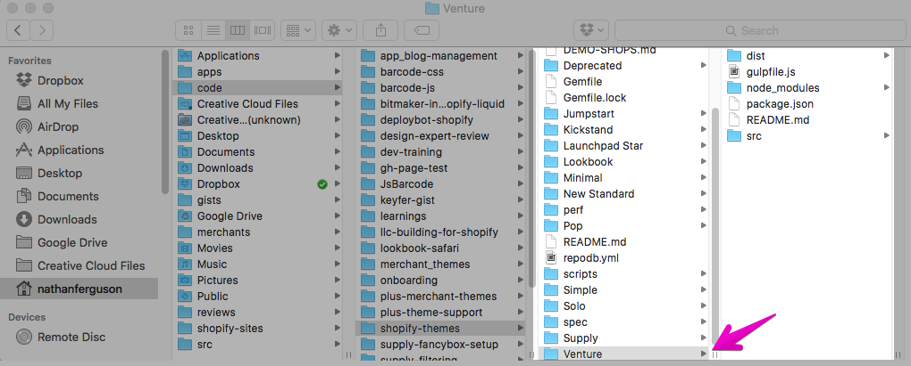

Development playground
You need a space that's going to let you build, test and iterate.
Make launching the final product easy.
- Head to shopify.ca/partners
- Create an account
- Have access forever
Shopify Partners Program
50% playground, 50% business.
- Create new stores for clients
- Develop new apps for the App Store
- Design new themes for the Theme Store
- Access to a variety of resources
- Hand off development stores to merchants
- Review collected and incoming payments

Development store
Create a development store with at least the "online store" channel enabled.

Import products
- Click on Products in the sidebar
- Import products to do a bulk upload
- Upload
products.csvlocated in this presentation folder
Collections
Make a "smart" collection called Snowboard.

Collections
Make a few more collections:
- Jackets for products with the type equal to "Jackets".
- Accessories for any product tags you feel is appropriate.
- Bindings for products that contains the word "Bindings".
- A collection with the product vendor of your choice.
Install and publish a free theme called Venture.
Storefront editor
Using the storefront editor, make the following customizations:
- Upload a slide image from the
images/directory in the presentation folder. - Set at least three "featured collections" on the homepage.
- Set at least one "featured products" collection on the homepage and change the number of rows displayed.
- On collection pages, display the product vendor.
- On product pages, display all the product's tags.
Liquid
A templating language that will output information into your theme's template files.
// Liquid
<h1>{{ product.title }}</h1>
<p>{{ product.description }}</p>
// HTML returned
<h1>Rooster Decor Wood Cheese Board</h1>
<p>This is such a lovely wood grain rooster cheese board.
Great country / rustic decor for the rooster collector.</p>
Online editor
Edit your theme files online.
We'll show how to work locally later.
Online editor
Shopify themes use a flat file structure.

Theme files
Template files are the view for individual pages.
index.liquidis the home pageproduct.liquidis for product pagescollection.liquidfor collection pagesarticle.liquidfor blog articles
Learn about all the available templates here.
Theme files
Layout files wrap the template file with code that will be used on every page.
{{ content_for_header }}outputs code Shopify and apps need{{ content_for_layout }}outputs the template file's code
Learn about layout files here.
product.liquid
theme.liquid

theme.liquid

theme.liquid
Task #1: Objects
Learn about properties available to the product object
posted in Shopify's documentation.
https://docs.shopify.com/themes/liquid-documentation/objects/product
Properties of the product object.

Task #1: Objects
Make the following additions to the product page template:
- Change the
<h1>around the product's title to an<h2>. - Add
<h4>More info</h4>above the product description. - Add the product's type below the product description with the label
Type:
Task #1: Solution
// Product title
<h2 itemprop="name" class="product-single__title">{{ product.title }}</h2>
// Product description
<div class="rte product-single__description" itemprop="description">
<h4>More info</h4>
{{ product.description }}
</div>
<p>Type: {{ product.type }}</p>
Task #2: Filters
Filters modify whatever they are attached to. There are a handful of types which you can learn about in the docs.
https://docs.shopify.com/themes/liquid-documentation/filters
{{ object.property | filter }}
Pro tip: That line is called a "pipe".
Types of filters
String filters: for when we want to modify words, sentences, titles, anything with characters.
{{ 'HOW ARE YOU?' | downcase }}
{{ product.handle | append: '.png' }}
{{ article.author | replace: 'Nathan', 'Bob' }}
how are you?
fuzzy-boots.png
Bob PJF
Types of filters
URL filters: for when you want to output the path to webpage or file.
{{ 'logo.png' | asset_url }}
{{ product.vendor | url_for_vendor }}
{{ "Shop winter boots" | link_to_tag: 'Boots' }}
//cdn.shopify.com/s/files/1/0087/0462/t/394/assets/logo.png?34423
/collections/vendors?q=Burton
<a title="Show products matching tag Boots" href="/collections/frontpage/boots">Shop winter boots</a>
Task #2: Filters
Using filters:
- Have the product vendor link to a collection of products from that vendor.
- Have the product type link to a collection of products of that type.
Task #3: Linked product tags
Output a list of product tags after the description. Each tag must:
- start with a capital letter, and
- link to a collection of products with that same tag
Note: We'll look at the product "Andie" since it already has some tags.
Iteration tags
To loop through tags, we'll need to know about Iteration tags.
Task: Write a for-loop that outputs each tag the product has.
<div class="product-single__tags">
<p>Tags:
// for-loop here...
</p>
</div>
Solution
Just with liquid output, no link filter yet.
<div class="product-single__tags">
<p>Tags:
{% for tag in product.tags %}
{{ tag | capitalize | link_to: ??? }},
{% endfor %}
</p>
</div>
What are we linking to? Why doesn't link_to_tag work?
Variable tags
Learn about Variable tags here.
Task: Set a variable to the URL of the entire product catalog.
<div class="product-single__tags">
<p>Tags:
{% for tag in product.tags %}
// set a variable to '/collections/all/' and append tag
{{ tag | capitalize | link_to: variable }},
{% endfor %}
</p>
</div>
Solution
<div class="product-single__tags">
<p>Tags:
{% for tag in product.tags %}
{% assign tag_coll = '/collections/all/' | append: tag %}
{{ tag | capitalize | link_to: tag_coll }},
{% endfor %}
</p>
</div>
What about when there aren't any product tags? Also, how do we not show that last comma?
Control flow tags
Also known as "conditional statements", read the documentation about Control flow tags here.
Task: Two things to complete
- Wrap the entire for-loop in a check whether there are any tags at all. Hint:
product.tags.size. - Display the comma only when we aren't on the last iteration for the for-loop. Hint:
forloopis an object.
Final result: Control flow tags
{% if product.tags.size > 0 %}
<div class="product-single__tags">
<p>Tags:
{% for tag in product.tags %}
{% assign tag_coll = '/collections/all/' | append: tag %}
{{ tag | capitalize | link_to: tag_coll }}{% unless forloop.last %},{% endunless %}
{% endfor %}
</p>
</div>
{% endif %}
That... was a lot of liquid.
Snippets
In our folder structure, there's a Snippets directory.
Snippets help with two things:
- Reusing and repurposing lines of code.
- Help organize long templates into just a handful of snippets.
Where do you see repetition in collection.liquid?
Theme tags
Check out the docs on Theme tags to learn about the include tag.
Task #4: Related products
List related products at the bottom of the product page.
- Maximum of five products listed, and
- All related products must share the same collection.
Initial step: Related products
<div class="grid__related-products">
<h2>Related products</h2>
<div class="grid grid--no-gutters grid--uniform">
{% for ... %}
<div class="grid__item small--one-half medium-up--one-fifth">
// include the 'product-card' snippet
</div>
{% endfor %}
</div>
</div>
How do we know what collections are available to the product?
Initial step: Related products
<div class="grid__related-products">
<h2>Related products</h2>
<div class="grid grid--no-gutters grid--uniform">
{% for product in product.collections.first.products %}
<div class="grid__item small--one-half medium-up--one-fifth">
{% include 'product-card', product: product %}
</div>
{% endfor %}
</div>
</div>
How can we control the number of products displayed?
Final result: Related products
{% assign related_collection = product.collections.first.products | sort: 'price' %}
{% if related_collection.size > 0 %}
<div class="grid__related-products">
<h2>Related products</h2>
<div class="grid grid--no-gutters grid--uniform">
{% for product in related_collection limit: 5 %}
<div class="grid__item small--one-half medium-up--one-fifth">
{% include 'product-card', product: product %}
</div>
{% endfor %}
</div>
</div>
{% endif %}
Static vs Transactional
Does your website exist to just provide information?
Or are you trying to get visitors to actually do something?
Navigation
People need to navigate your site and you need to make it easy.
Problem: What does "easy" actually mean?
- Small number of links?
- Lots of links with sub-navigation?
- Clear language?
- Use of imagery and icons?


 arghenoia-shop.com
arghenoia-shop.com
 letterlights.co.uk
letterlights.co.uk
Careful with icons...
What will this link you to?
"A user’s understanding of an icon is based on previous experience. Due to the absence of a standard usage for most icons, text labels are necessary to communicate the meaning and reduce ambiguity."nngroup.com/articles/icon-usability
Collections
Show off your stuff! But how much do you show?
- Price
- Name
- Options - colors, sizes
- Availability - low stock, sold out
- Anything else?
 shop.herschelsupply.ca
shop.herschelsupply.ca
 johnnycupcakes.com
johnnycupcakes.com
Collections
What else can our collection page do for us?
- Be more interactive - show me more pictures!
- Lead to cart faster - save me clicks!
- Be more visually diverse - I'm sick of boxes in rows!
 sovajlife.com
sovajlife.com
Often overlooked pages
Pages that are often fall short by only offering the base requirements:
- Search results
- Customer account information
- Order history
- Password recovery
- 404 page
Line item properties
Attach additional information to individual cart items:
- Make your product's customizable
- Ask customers delivery or wrapping instructions
- Trigger options at the cart page
This is made possible via line item properties.
Line item properties
Line item properties
Insert the code below into product.liquid before the
submit button.
<div class="product-form__item product-form__item--lip">
<label for="Engraving">Engraving</label>
<input type="text" id="engraving" name="properties[Engraving]">
</div>
Test purchases
You may want to try test orders in your store for a number of reasons:
- See order confirmation emails.
- Trying out cart modifications.
- Customizing a Order status page.
The best way to do that in a development shop is by activating the Bogus Gateway.
Test purchases
From your dashboard, fo to Settings > Payments
Set "(for testing) Bogus Gateway" as your payment gateway.
Test purchases
Task: Buy something.
- Credit card number: 1
- CVC: 111
- Expiry Date: Any time in the future.
Alternate templates
Control which products get certain features.
Task: Make just one product have the engraving customization.
... then remove your change from product.liquid
Theme settings
Make a theme setting to turn the tags displayed on product pages on and off.
{
"name": "Product page",
"settings": [
{
// ...
},
{
"type": "checkbox",
"id": "product_page_tags_enable",
"label": "Show tags"
}
]
},
In Config folder, find settings_schema.json
Theme settings
Wrap our previous code in an if-statment
{% if settings.product_page_tags_enable %}
// code for product tags
{% endif %}
Ajax API
Shopify has an ajax API that allow cart manipulation: Shopify's Ajax API
There is a "globably hosted" jQuery library supported by Shopify available.
{{ '//ajax.googleapis.com/ajax/libs/jquery/1.11.0/jquery.min.js' | script_tag }}
{{ 'api.jquery.js' | shopify_asset_url | script_tag }}
Task runners
Automate tasks or build your file structure.

Grunt (gruntjs.com) or Gulp (gulpjs.com)
Task runners

Demo: gulp zip
Version control
No out-of-the-box integration for repository services like GitHub.
Beanstalk and DeployBot offer automatic integrations to help ship/deploy your code changes.
Awesome guest blog post on Shopify's Partner blog about integrations: Using Git to Simplify Shopify Theme Deployment
Theme Kit
Forget third parties; do it yourself!
Theme Kit: a tool you can install locally that integrates with your private app.
Even more stuff
More advanced topics you can explore:
- cart attributes
- customer accounts
- alternate layouts
- translation settings
- modifying checkout
- app integration
Resources
Shopify Liquid documentation: Examples and use-cases
Shopify forums: Answers from Shopify employees, Experts, and other Partners
Mark Dunkley's Cheat Sheet: Most common Liquid items at a glance
Shopify Partners Blog: Designing, developing and selling with Shopify
More Partner stuff
If you're looking to dive further into the Partner program
- Branding yourself as a Partner
- Become a Setup Expert after 5 shops